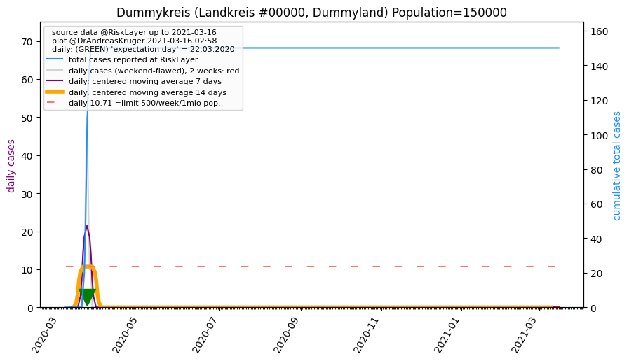

Up to about.html or to overview of Germany
Or down to Kreise (districts)
 Dummyland, and its 1 districts (05.05.2020)
Dummyland, and its 1 districts (05.05.2020)
 total cases: [0, 0, 0, 0, 0, 0, 0, 0, 0, 0, 0, 0, 0, 0, 10, 20, 50, 100, 130, 140, 150, 150, 150, 150, 150, 150, 150, 150, 150, 150, 150, 150, 150, 150, 150, 150, 150, 150, 150, 150, 150, 150, 150, 150, 150, 150, 150, 150, 150, 150, 150, 150, 150, 150, 150, 150, 150, 150, 150, 150, 150, 150]
total cases: [0, 0, 0, 0, 0, 0, 0, 0, 0, 0, 0, 0, 0, 0, 10, 20, 50, 100, 130, 140, 150, 150, 150, 150, 150, 150, 150, 150, 150, 150, 150, 150, 150, 150, 150, 150, 150, 150, 150, 150, 150, 150, 150, 150, 150, 150, 150, 150, 150, 150, 150, 150, 150, 150, 150, 150, 150, 150, 150, 150, 150, 150]
population: 150,000 --> current prevalence: 1000 known infected per 1 million population
Dummyland's 1 Kreise
Sorted by 'center day'
Click on name of Kreis to see detailed data.
Click on column header name, to sort by that column; click again for other direction.
| 05.03.2020 | 06.03.2020 | 07.03.2020 | 08.03.2020 | 09.03.2020 | 10.03.2020 | 11.03.2020 | 12.03.2020 | 13.03.2020 | 14.03.2020 | 15.03.2020 | 16.03.2020 | 17.03.2020 | 18.03.2020 | 19.03.2020 | 20.03.2020 | 21.03.2020 | 22.03.2020 | 23.03.2020 | 24.03.2020 | 25.03.2020 | 26.03.2020 | 27.03.2020 | 28.03.2020 | 29.03.2020 | 30.03.2020 | 31.03.2020 | 01.04.2020 | 02.04.2020 | 03.04.2020 | 04.04.2020 | 05.04.2020 | 06.04.2020 | 07.04.2020 | 08.04.2020 | 09.04.2020 | 10.04.2020 | 11.04.2020 | 12.04.2020 | 13.04.2020 | 14.04.2020 | 15.04.2020 | 16.04.2020 | 17.04.2020 | 18.04.2020 | 19.04.2020 | 20.04.2020 | 21.04.2020 | 22.04.2020 | 23.04.2020 | 24.04.2020 | 25.04.2020 | 26.04.2020 | 27.04.2020 | 28.04.2020 | 29.04.2020 | 30.04.2020 | 01.05.2020 | 02.05.2020 | 03.05.2020 | 04.05.2020 | 05.05.2020 | 14days new cases | Kreis | Prev. p.1mio | 14days Incid.p.1mio | Population | center day | Reff_4_7 | Bundesland | info |
|---|
| 0 | 0 | 0 | 0 | 0 | 0 | 0 | 0 | 0 | 0 | 0 | 0 | 0 | 0 | 10 | 20 | 50 | 100 | 130 | 140 | 150 | 150 | 150 | 150 | 150 | 150 | 150 | 150 | 150 | 150 | 150 | 150 | 150 | 150 | 150 | 150 | 150 | 150 | 150 | 150 | 150 | 150 | 150 | 150 | 150 | 150 | 150 | 150 | 150 | 150 | 150 | 150 | 150 | 150 | 150 | 150 | 150 | 150 | 150 | 150 | 150 | 150 | 0 | Dummykreis_LK | 1000 | 0 | 150,000 | 17.0 | nan | Dummyland | |
Dummykreis (Landkreis #0, Dummyland) Population=150000 AGS=0
Neighbours within 50 km:
total cases: [0, 0, 0, 0, 0, 0, 0, 0, 0, 0, 0, 0, 0, 0, 10, 20, 50, 100, 130, 140, 150, 150, 150, 150, 150, 150, 150, 150, 150, 150, 150, 150, 150, 150, 150, 150, 150, 150, 150, 150, 150, 150, 150, 150, 150, 150, 150, 150, 150, 150, 150, 150, 150, 150, 150, 150, 150, 150, 150, 150, 150, 150]
Landkreis Dummykreis population: 150,000 --> current prevalence: 1000 known infected per 1 million people.
Back to top or: Up to about.html
tiny.cc/cov19de page generated 2020-05-05 12:58:00.